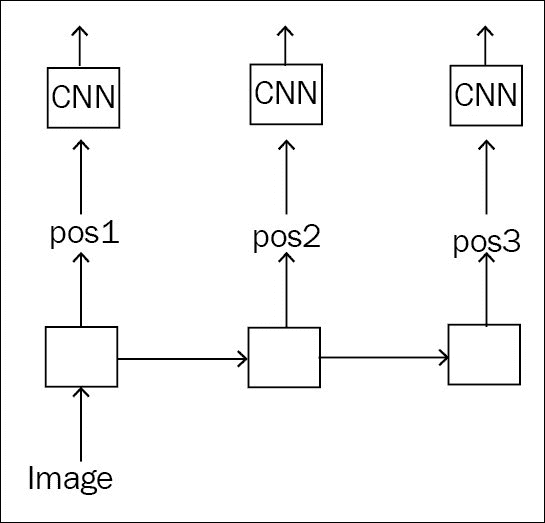
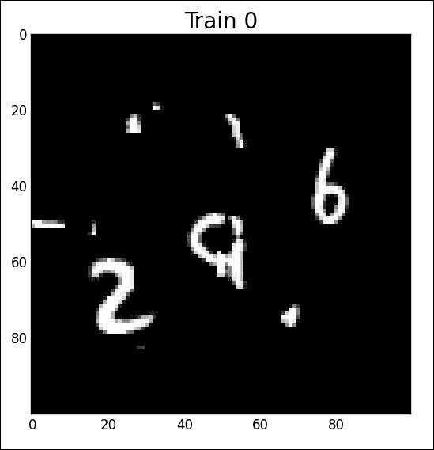
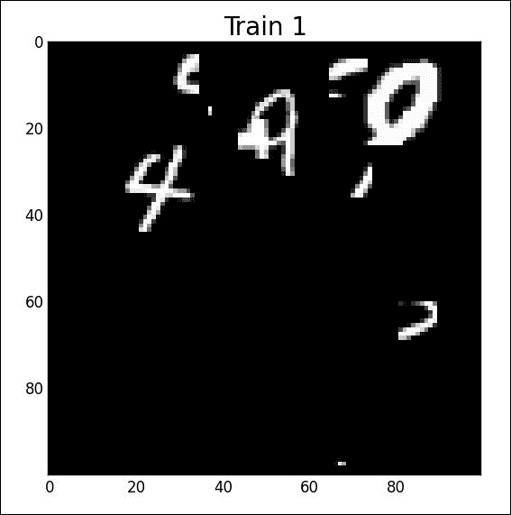
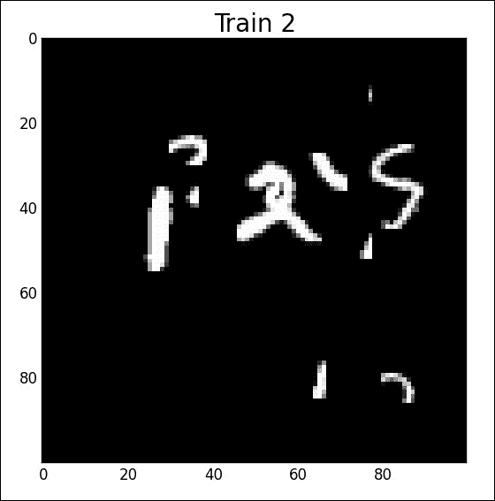

为了读取多个数字，我们简单地用递归网络代替定位前馈网络，该递归网络将输出对应于每个数字的多个仿射变换:

l_conv2_loc = mnist_cnn.model(l_pool0_loc, input_dim=dim, p=sh_drp, num_units=0)
class Repeat(lasagne.layers.Layer):
def __init__(self, incoming, n, **kwargs):
super(Repeat, self).__init__(incoming, **kwargs)
self.n = n
def get_output_shape_for(self, input_shape):
return tuple([input_shape[0], self.n] + list(input_shape[1:]))
def get_output_for(self, input, **kwargs):
tensors = [input]*self.n
stacked = theano.tensor.stack(*tensors)
dim = [1, 0] + range(2, input.ndim+1)
return stacked.dimshuffle(dim)
l_repeat_loc = Repeat(l_conv2_loc, n=num_steps)
l_gru = lasagne.layers.GRULayer(l_repeat_loc, num_units=num_rnn_units,
unroll_scan=True)
l_shp = lasagne.layers.ReshapeLayer(l_gru, (-1, num_rnn_units)) 这将输出一个维度(无，3，256)的张量，其中第一个维度是批量大小，3是GRU中的步骤数，256是隐藏层大小。在这一层之上，我们简单地添加与前面相同的全连接层，以在开始时输出三个身份图像:
b = np.zeros((2, 3), dtype=theano.config.floatX)
b[0, 0] = 1.0
b[1, 1] = 1.0
l_A_net = lasagne.layers.DenseLayer(
l_shp,
num_units=6,
name='A_net',
b=b.flatten(),
W=lasagne.init.Constant(0.0),
nonlinearity=lasagne.nonlinearities.identity)
l_conv_to_transform = lasagne.layers.ReshapeLayer(
Repeat(l_dim, n=num_steps), [-1] + list(l_dim.output_shape[-3:]))
l_transform = lasagne.layers.TransformerLayer(
incoming=l_conv_to_transform,
localization_network=l_A_net,
downsample_factor=args.downsample)
l_out = mnist_cnn.model(l_transform, input_dim=dim, p=sh_drp, num_units=400)为了测试分类器，让我们创建带有一些扭曲的 100x100 像素的图像，这次是三个数字:
python create_mnist_sequence.py --nb_digits=3 --output_dim=100
绘制前三幅图像(对应于序列 296 、 490 、 125 ):
python plot_data.py mnist_sequence3_sample_8distortions_9x9.npz



python 3-recurrent-stn-mnist.py Epoch 0 Acc Valid 0.268833333333, Acc Train = 0.268777777778, Acc Test = 0.272466666667 Epoch 1 Acc Valid 0.621733333333, Acc Train = 0.611116666667, Acc Test = 0.6086 Epoch 2 Acc Valid 0.764066666667, Acc Train = 0.75775, Acc Test = 0.764866666667 Epoch 3 Acc Valid 0.860233333333, Acc Train = 0.852294444444, Acc Test = 0.859566666667 Epoch 4 Acc Valid 0.895333333333, Acc Train = 0.892066666667, Acc Test = 0.8977 Epoch 53 Acc Valid 0.980433333333, Acc Train = 0.984261111111, Acc Test = 0.97926666666
绘制作物图:
python plot_crops.py res_test_3.npz